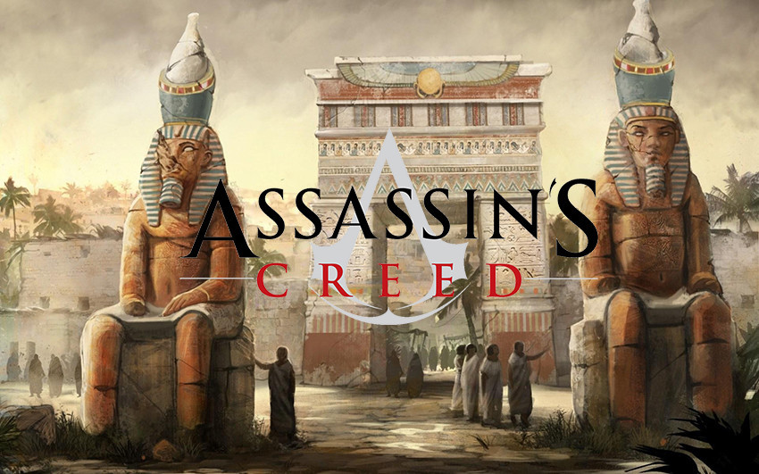

Assassin's Creed: Origins "será una precuela de la saga según Eurogamer"
Tras el año de descanso que Ubisoft le concedió a la serie 'Assassin's Creed' es normal que comiencen
las especulaciones y filtraciones en torno al regreso de una de las sagas más asentadas del estudio galo y los detalles de aquel viaje a Egipto del que hablábamos ayer mismo en VidaExtra
cada vez se hacen más tangibles.
El medio Eurogamer ha vuelto a hacer uso de fuentes propias para confirmar la información aparecida recientemente
, realizando algunos aportes interesantes:
por lo pronto el medio inglés afirma que el nombre de 'Assassin's Creed: Origins' es real y que el desarrollo del mismo se realizó bajo el nombre de Project Empire.
Sin embargo, el dato más significativo es que 'Assassin's Creed: Origins'
se trata de una precuela de la saga, un pequeño gran detalle a tener en cuenta desde el punto de vista argumental y que mantendría lo visto en las entregas realizadas hasta
ahora y el filme estrenado a finales del año pasado y que también es canon dentro del universo del juego.
Más allá de esto nos encontramos con una imagen que, pese a no ser especialmente, nítida Eurogamer reconoce como verdadera
y que da algunas pistas extra. En el margen superior se puede ver que está en desarrollo la misión
'Assassinate the Crocodile' con la descripción 'Seguir a Shadya a la villa de Khenut.
Knut fue la mujer del Unas, el último faraón de la dinastía V de Egipto de c. 2342 a 2322 a. C.
Por último, aunque no menos importante, se confirma el regreso de las barcas, un elemento que había estado
ausente en la saga desde 'Assassin's Creed: Black Flag', así como que llegará a PC, Xbox One y PS4 este mismo año.

Con el E3 asomando a la vuelta de la esquina es más que probable que no tardemos
en tener noticias sobre 'Assassin's Creed: Origins' directamente de Ubisoft,
sobre todo teniendo en cuenta que la compañía de Yves Guillemot suele contar con su propia
conferencia durante el evento. Hasta entonces
, habrá que estar expectante... cual Assassin.